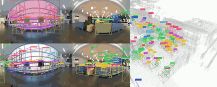
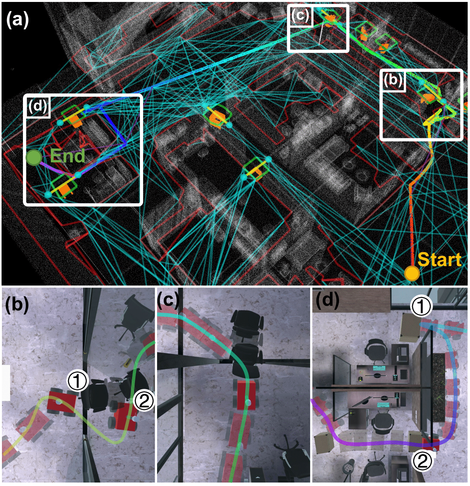
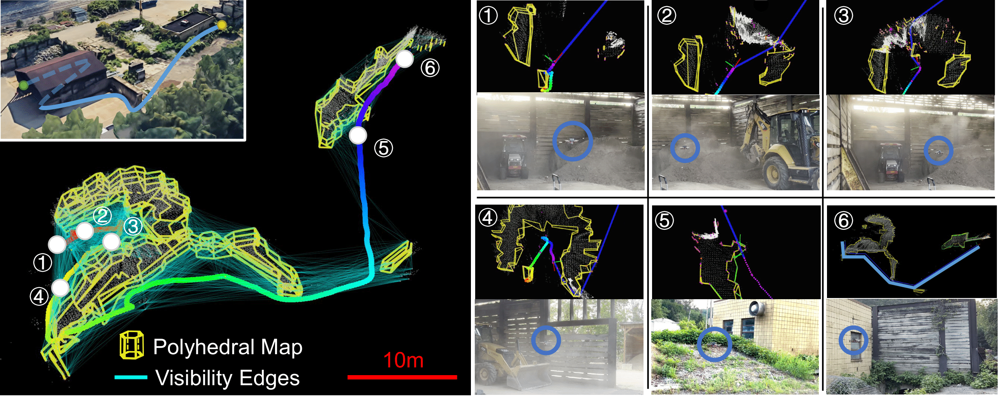
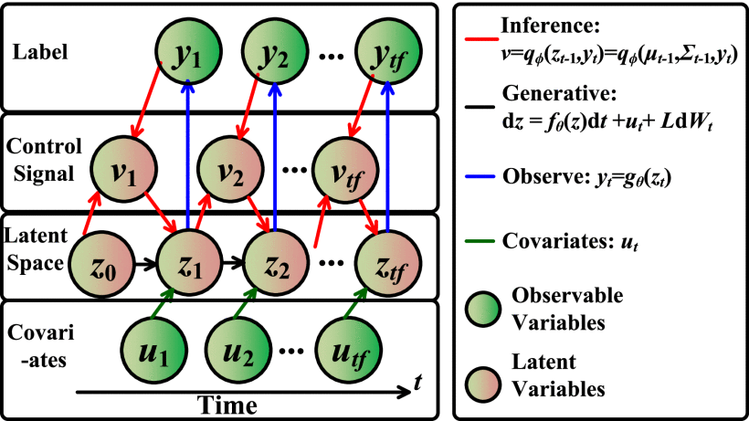
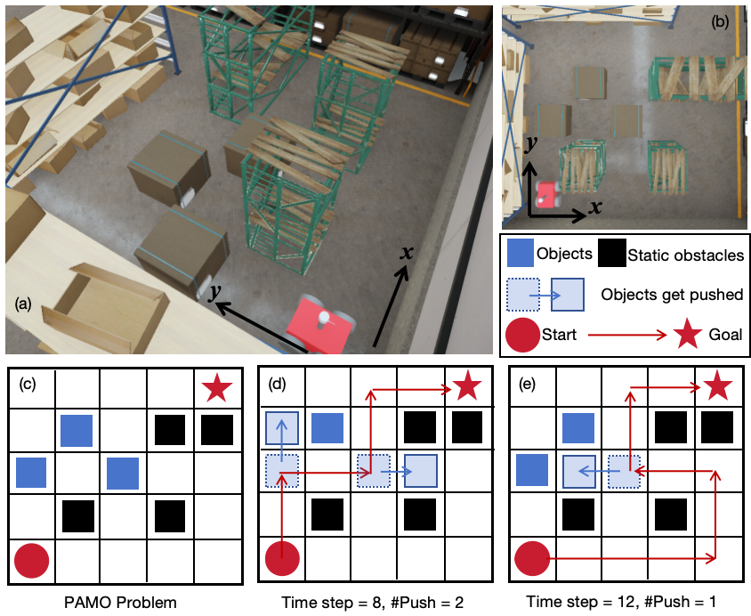
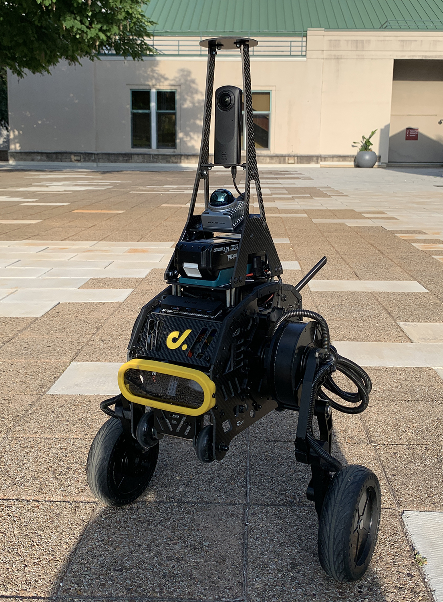

|
Guofei Chen Hi! I am Guofei Chen. I obtained my Master's in Robotics from Carnegie Mellon University, advised by Prof. Ji Zhang and Prof. Wenshan Wang. Before CMU, I received my Bachelor's in Automation from Zhejiang University, where I worked with Prof. Fei Gao. I am interested in navigation and manipulation systems that actively interact and evolve with the environment or human, which spans SLAM, planning, and machine learning. |
{kind=link}
ResearchMy research focuses on autonomous navigation and manipulation systems for mobile robots, especially in complex unknown environments. Topics include SLAM, planning among movable obstacles, real-time visibility-graph methods, and full-stack platforms for data-driven navigation. |
|
 |
SuperMap: A Spatio-Temporal SLAM System for Visual-Language Navigation
Shibo Zhao*, Guofei Chen*, Honghao Zhu, Zhiheng Li, Changwei Yao, Nader Zantout, Seungchan Kim, Wenshan Wang, Ji Zhang, Sebastian Scherer * Equal contribution (order decided by coin flip) Robotics: Science and Systems (RSS), 2026 paper / code / project page / video A 4D spatio-temporal mapping framework for language-guided navigation that integrates high-frequency geometric SLAM with asynchronous open-vocabulary perception. A consistency-driven mapping engine combines 3D-aware instance association/re-activation with a principled existence-and-label confidence update to maintain stable object identities and prune stale content under occlusions and scene changes, producing a queryable 4D scene-graph that interfaces naturally with VLMs. |
|
 |
Interactive-FAR: Interactive, Fast and Adaptable Routing for Navigation Among Movable Obstacles in Complex Unknown Environments
Botao He*, Guofei Chen*, Wenshan Wang, Ji Zhang, Cornelia Fermuller, Yiannis Aloimonos IEEE/RSJ International Conference on Intelligent Robots and Systems (IROS), 2024 arXiv / code / project page / video An efficient navigation system that combines manipulating movable objects for shorter paths, even in complex unknown environments. Replans the global path in milliseconds. |

|
AIM-Nav: A FullStack Platform for Data-Driven Navigation Research
Guofei Chen, Botao He, Shibo Zhao, Yiannis Aloimonos, Wenshan Wang, Ji Zhang Preprint, 2024 project page Full-stack navigation systems on Unitree Go2 and Diablo, aiming to provide a low-cost and ready-to-use platform for AI navigation research. |
|
 |
Air-FAR: Fast and Adaptable Routing for Aerial Navigation in Large-scale Complex Unknown Environments
Botao He, Guofei Chen, Wenshan Wang, Cornelia Fermuller, Yiannis Aloimonos, Ji Zhang International Conference on Robotics and Automation (ICRA), 2025 paper / project page A real-time 3D mapping and path planning algorithm for aerial robots that is up to 1000x faster than grid-map based strong benchmarks. |
|
 |
Analyzing and Improving Supervised Nonlinear Dynamical Probabilistic Latent Variable Model for Inferential Sensors
Zhichao Chen, Hao Wang, Guofei Chen, Yiran Ma, Le Yao, Zhiqiang Ge, Zhihuan Song IEEE Transactions on Industrial Informatics (T-II), 2024 paper / pdf An inference framework using deep networks derived closely following optimal control principles for large-scale modeling of chemical processes. |
|
 |
Search-Based Path Planning among Movable Obstacles
Zhongqiang Ren, Bunyond Suvonov, Guofei Chen, Botao He, Yijie Liao, Cornelia Fermuller, Ji Zhang International Conference on Robotics and Automation (ICRA), 2025 paper Search-based planning algorithms on grid maps for solving the path planning among movable obstacles (PAMO) problem, with completeness and optimality guarantees. |
Projects |
|
|
Unitree Go2 Navigation
2024 code and documentation A full-stack navigation platform using only the original onboard sensor (the L1 lidar by Unitree). Goes to a command position and avoids obstacles without hardware modification. |
|
 |
Wheel-legged Navigation Platform using Diablo
2024 code and documentation Open-sourced hardware and software stack for navigation on Diablo, a wheel-legged robot, using Livox Mid-360 LiDAR. Serves as a robust platform for language and other navigation tasks. |
|
TinySQL: A Relational Database from Scratch
2022 code / technical report A self-contained, originally designed SQL database management system. Architect and code reviewer of the project: B+ tree indexes, page-based record manager, buffer manager, and a row-based storage engine. |
|
Website template adapted from Jon Barron. |